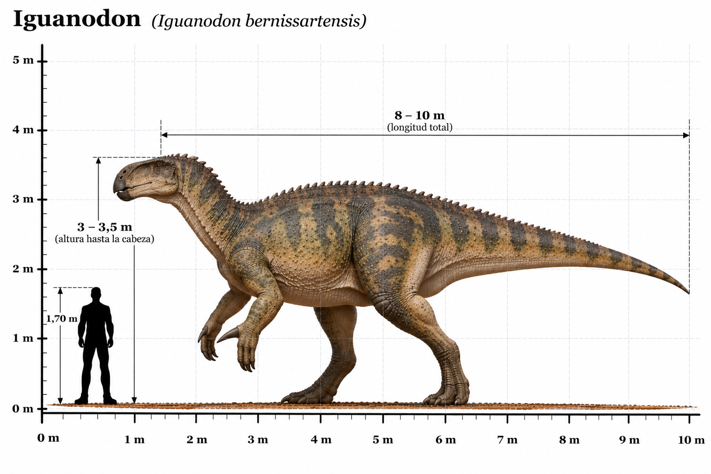

Iguanodon bernissartensis

El Iguanodon bernissartensis fue un gran dinosaurio herbívoro que habitó Europa durante el Cretácico temprano, hace aproximadamente entre 126 y 122 millones de años. Fue uno de los primeros dinosaurios descritos científicamente, y su descubrimiento desempeñó un papel importante en los comienzos de la paleontología de dinosaurios. Se caracterizaba por su cuerpo robusto, una cola larga y musculosa y unas extremidades posteriores más largas que las delanteras. Podía desplazarse tanto sobre dos patas como sobre cuatro, dependiendo de la actividad que estuviera realizando. Su característica más distintiva era una gran espina ósea situada en el pulgar de cada mano, que probablemente utilizaba como mecanismo de defensa. Los otros dedos estaban adaptados para soportar parte del peso corporal y manipular la vegetación. Poseía un pico córneo y numerosos dientes especializados en triturar plantas. Uno de los hallazgos más importantes de esta especie se produjo en Bernissart, Bélgica, donde se descubrieron numerosos esqueletos que permitieron conocer detalladamente su anatomía.
- Grupo: Ornitópodo.
- Familia: Iguanodontidae (iguanodóntidos).
- Período: Cretácico temprano (hace aproximadamente 126–122 millones de años).
- Alimentación: Herbívoro.
- Longitud: Aproximadamente 9–11 metros.
- Altura: Aproximadamente 2,5–3 metros hasta la cadera.
- Localización: Europa (especialmente Bélgica y Reino Unido).
